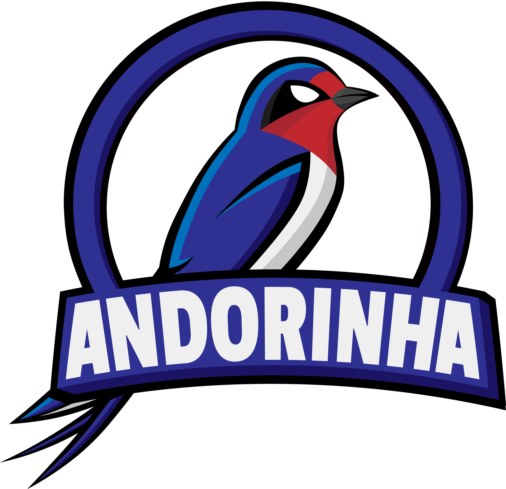
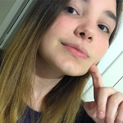
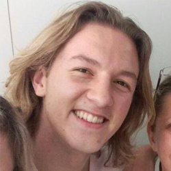
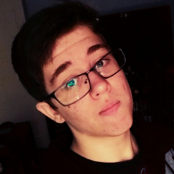
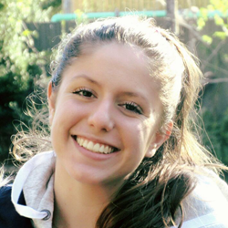
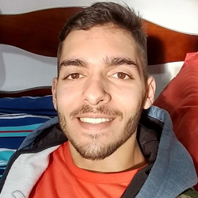
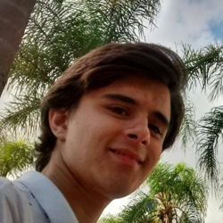
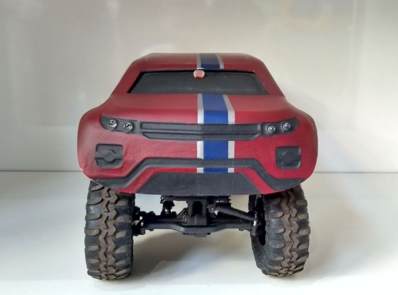

THE TEAM
Andorinha: the Portuguese word for the swallow bird, very common in all biomes of Brazil.

Andorinha is a brazilian team from Colégio Técnico de Campinas (COTUCA) participating for the second time in the Land Rover 4x4 in Schools Challenge. The first year of participation was in the Development Class, but in 2017 the team is participating in the Professional Class.
Brazil hosted for the first time in 2017 the National Finals, and it took place in Campinas, the city where we are from. There, we got the second place among the professional teams, classifying us for the World Finals in Abu Dhabi. We also won the prizes for best visual identity and best verbal presentation among the professional teams.
MEMBERS

Aline Almeida - Team Manager
Aline, 16, is an Informatics student in COTUCA and she is the Andorinha team's manager.
Her job role is to create the cronogram and portfolio, be aware of all the details
of the competition, vehicles parts and everyone's jobs, designing the team's
brand and visual identity, etc. Aline is also responsible for the team's social
media, such as Facebook, Twitter and Instagram. And because she knows how to program,
she also made the team's website!

José Machuca - Manufacturing Engineer
José or Zé, 17, is a Mechatronics student in COTUCA and he is responsible for idealizing, designing,
prototyping and creating the team's vehicle parts, such as chassis, wheels, tow bar, etc. Zé
works most of the time with Murilo and Wesley, as the Mechanics part of the team. He is
the member from the previous formation, so he is always helping the other members with
relevant information about the competition as he knows a lot about it!

João Pagnan - Electrical Engineer
João, 17, is an Electronics student in COTUCA and he is responsible for the electrical parts of
the vehicle. João has a lot of knowledge in the area, so his job has been improving our
electrical system with new components, less costs and maximum efficiency. He also knows how
to program, so he was also in charge of the coding related to lights, tilt sensor and buzzer!

Júlia Giatti - Resources Manager
Julia, 17, together with João, is an Electronics student in COTUCA, but her job in the team
is mostly related to the team's expenses, tracking and taking care of it. She was also
responsible for searching about the real parts of cars, materials the team could use, etc,
but with the upcoming event she started helping with the team's pit display and portfolio aswell!

Murilo Corrêa - Manufacturing Engineer
Murilo, 19, is a Mechatronics student in COTUCA and he works most of the time with Zé, sketching,
creating, manufacturing and testing the vehicle. Murilo came up with great and innovative designs
for the car, like the tires, chassis and steering. He really knows the trends in Mechanics so he is
always telling the team new things that they could use!

Wesley Fransin - Design Engineer
Wesley, 18, is also a Mechatronics student in COTUCA, but his job is mostly related to the
CAD designing part, as he has experience in it. Wesley modeled all of the team's vehicle in
CREO, including a stunning body shell. He was also responsible for testing Zé's and Murilo's
ideas using apps before manufacturing them, to assure that they would work property and
material wouldn't be wasted!
VEHICLE

Andorinha's vehicle for the Brazililian National Finals
Andorinha's goal is to make something never tought of, something different than the
usual things that come to mind when you think about a 4x4 vehicle.
Instead of making a normal 4x4 body shell, with a squared format, the team designed
a new concept for a off-road vehicle: something transitioning between the modern and
the "wild", comming up with a car similar to the Land Rover Evoque, one of the only
Land Rover cars produced in Brazil.
Besides the look, the team's vehicle also contains some technological materials in its
composition, such as carbon fiber and different techniques with 3D printing, used to
create new parts for the vehicle. The team manufactured a lot of components, but many of
them have also been improved.